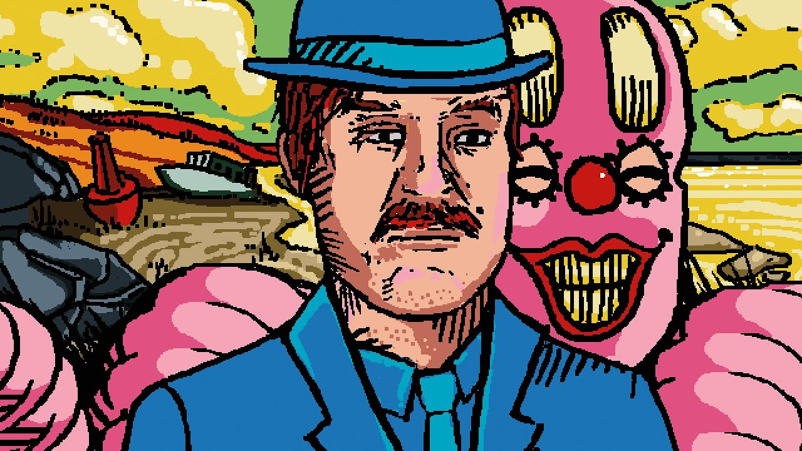

Prepare for the Manifestation of "Uncomfortable"
For all of mankind’s known recorded history, humans have peerlessly attempted to represent raw emotions and/or the personal physicality of feeling in their art. Throughout thousands of years of creative evolution and diverse mediums, millions of minds have unknowingly sought to conquer the same goal through their creations. None succeeding; that is until August 2019. Under the YouTube persona U M A M I, Justin Tomchuck first made himself known to the scene in 2017. At first uploading short animated videos that took on a skit type manner — simply but exquisitely — featuring the classic audio manipulation and meshing of the musical and artistic style that U M A M I has become known for. To now, finally articulating human emotion and feeling through art. Interface | Part 1 was the first time in known recorded history that art made someone physically and emotionally feel. That feeling is more than ‘uncomfortable’, it is the realization of our misplacement in all reality.